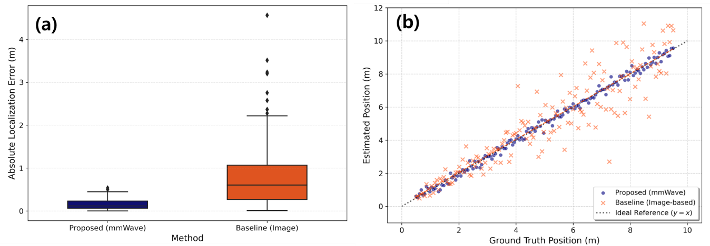

60-day field-trial site — Daejeon World Cup Stadium (underground parking, indoor facilities)

Performance — absolute positioning-error box plot and estimated-vs-actual scatter plot
AbstractAccurate localization of occupants in complex indoor facilities and underground spaces is essential for effective emergency response. However, conventional closed-circuit television (CCTV) and infrared (IR) sensor-based systems suffer from severely degraded detection performance under smoke, reduced illumination, and thermal noise, while also raising privacy concerns. To overcome these limitations, this paper proposes an indoor human detection and geo-referencing system employing distributed 60 GHz millimeter-wave (mmWave) radar sensors that are robust to adverse environmental conditions and inherently privacy-preserving. The proposed system deploys 14 distributed sensors—combining unidirectional (1-Way) and omnidirectional (4-Way) configurations tailored to spatial characteristics—and processes point cloud data in real time through a lightweight middleware architecture. Raw measurements are transformed from spherical to Cartesian coordinates, after which a dimensionality-reduction-based algorithm separates height information, performs two-dimensional density-based clustering (DBSCAN), and subsequently restores height to maximize computational efficiency. A geo-referencing technique incorporating sensor installation positions and orientations precisely converts sensor-relative coordinates to a world coordinate system aligned with building floor plans. The proposed system was validated through a 60-day field demonstration at the Daejeon World Cup Stadium, achieving 99.96% uptime. A controlled geo-referencing evaluation using a publicly available paired radar–skeleton dataset—which provides synchronized mmWave radar point clouds and optical motion capture-based 3D ground-truth coordinates—yielded a mean absolute error (MAE) of 0.59 m against the external skeleton reference after virtual geo-referencing alignment, while an image-based baseline employing a fixed-height assumption exhibited an MAE of 6.04 m, representing an approximately 10.2× improvement. These results demonstrate the practical viability of the proposed framework for privacy-preserving indoor occupant monitoring in complex indoor environments.
기존 영상·적외선 기반 재실 탐지는 연기·조도 변화·시야 가림과 대규모 설치 비용, 프라이버시 문제로 복잡 실내 공간에 부적합하다. mmWave 레이더는 조명·가림에 강하고 개인 식별 영상을 남기지 않아 대안으로 주목받지만, 대부분 단일 센서·제한된 공간에 머물고 지도·도면과 연계된 통합 좌표계로의 지리참조가 미흡했다.
제안 시스템은 공간 특성에 맞춰 단방향(1-Way)과 전방위(4-Way) 센서 14대를 분산 배치하고, 경량 미들웨어로 포인트 클라우드를 실시간 처리한다. 구면 좌표를 직교 좌표로 변환한 뒤 차원 축소로 높이를 분리해 2D 밀도 기반 클러스터링(DBSCAN)을 수행하고 높이를 복원해 연산 효율을 극대화한다. 센서 설치 위치·방위를 반영한 지리참조로 센서 상대좌표를 건물 도면 기준 세계좌표로 정밀 변환한다.
대전 월드컵경기장에서 60일 실증을 통해 99.96% 가동률을 달성했고, 공개된 레이더-스켈레톤 페어 데이터셋 기반 통제 평가에서 평균절대오차(MAE) 0.59m를 기록해 고정 높이를 가정한 영상 기반 베이스라인(6.04m) 대비 약 10.2배 개선을 보였다.
본 연구는 프라이버시를 보존하면서 복잡 실내 환경의 재실자를 안정적으로 모니터링할 수 있음을 실증했다. (IITP 차세대 AI 융합 모빌리티 시뮬레이션 과제, RS-2024-00459703 지원)
Structure · Design
센싱 계층(1-Way/4-Way 분산 mmWave) → 처리 계층(구면→직교 변환, 차원축소 DBSCAN+높이복원, 지리참조, 경량 미들웨어) → 응용 계층(실시간 관제·긴급 대응).